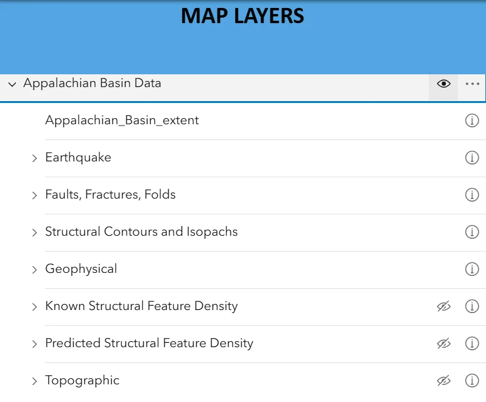

Process a large raster collection repeatably
Applied a scripted raster-to-vector workflow across the geologic file collection, replacing repeated manual conversions with a consistent processing sequence.
I built a Python workflow to convert more than 400 geologic rasters into polygon datasets for web GIS publication. The work connected repeatable spatial processing with the NETL interactive atlas, preparing scientific data so researchers could explore basin-specific layers through an accessible mapping interface.

The problem
Hundreds of geologic raster files needed to become usable web-mapping layers. Repeating conversion and preparation manually would make the collection difficult to process consistently and maintain for visualization.
My contribution
I developed the Python automation that processed more than 400 raster files into vector polygon datasets and prepared the outputs for GIS publication. My contribution focused on the processing and data-delivery workflow, rather than claiming sole authorship of the NETL atlas or every layer it displays.
Approach
Applied a scripted raster-to-vector workflow across the geologic file collection, replacing repeated manual conversions with a consistent processing sequence.
Produced vector polygon files suitable for upload and use in the web GIS environment. Data preparation connected the source rasters to layers that could be organized and explored online.
Prepared outputs for the NETL interactive atlas, where thematic controls let users inspect geologic and structural information within basin-specific maps.
Result & scope
The workflow prepared hundreds of geologic datasets for web-based GIS use and supported their presentation in the NETL atlas. The public application demonstrates the delivery context: users can explore basin maps, thematic layer categories and individual formation datasets. Original processing scripts are not public.
Learning & progression
The project demonstrates the step from performing a spatial operation to delivering a repeatable data service workflow. It connects batch processing, consistent spatial outputs and publishing requirements, a transferable pattern for moving research datasets into interfaces that other people can use without running the underlying code.
Evidence & technical detail
Expand a section to see methods, figures or detailed results. Select any figure to view it at full size.
These screenshots show how basin maps, thematic categories and detailed geologic layers appear in the NETL application. They document the environment supported by the raster-to-vector preparation workflow.


The documented workflow processed more than 400 geologic rasters into vector polygon files for GIS publication. No unmeasured time-saving or business-impact estimate is attached to that count.
Related work
First author and geospatial researcher
I developed 30-meter land-use basemaps that translate a common U.S. landscape into several modeling systems. This first-author Scientific Data publication combines geospatial processing, classification design and quantitative comparison to make heterogeneous environmental datasets usable across GCAM, CLM and LUH2.
Creator & sole developer
I conceived, designed and developed a web application connecting architectural plans with Quito property data. As its sole developer, I built the interface, Python APIs, municipal data integrations and interactive document tools, creating a workspace for renovation planning, measurements and spatial property analysis.
Python data-pipeline developer
I developed Python workflows to extract and standardize EPA greenhouse gas reporting data for 2010–2024. API-derived facility tables, FLIGHT classifications and identifier-based reconciliation were combined into reusable CSV outputs, moving from exploratory browser automation toward repeatable facility-level data preparation.
Let’s connect
I’m interested in work that connects analytical depth with useful implementation.